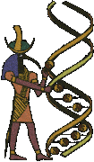

Reality
We humans always had to live with the fact that reality reaches beyond what our senses are able to percieve directly, that there are things determining our lives, even though we can not see, hear or feel them. Previously these things were angels, spirits and divine powers, magic spells, goblins, aether and hell. Today, we have X-rays and bacteria, we have magnetic fields, dioxin and quarks, files, the 4th Dimension, book money and brain waves.
All these things we can not perceive directly, and yet we believe they exist and are even dependent on them.
In the past, alchemists searched for a way to turn base metal into gold. Today, we could do it, but we know that it is not worth it and already have found other ways to refine things.
Today we know that every part of the universe may contain information about every other part, the part affecting the whole and vice versa. So why shouldn’t magic work then?
We have rediscovered ancient, alchemical principles in a new form; for example the the old magical principle “As above, so below” still lives on today in the principle of fractal self-similarity.
The transitions between past and present, between magic and science, between faith and knowledge are fluid. The scanning electron microscope revealed to me the landscapes of Paradise, and if I put my bank card in the machine, the number of archangels currently looking down on me is revealed.
My microwave is a holy, even magical cult object.
(Translated from one of my oldest Discordian Writings on Zimmer 523 - that shit is more than 10 years old I guess, and it didn’t improve over time. ^^ )